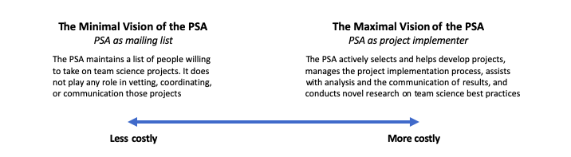

The financial cost of the PSA’s vision
Patrick S. Forscher and Hans IJzerman
In 2017, Chris Chartier shared a blog post that revealed a grand vision for psychology research: psychologists could build a “CERN for psychology” that does for psychology what particle accelerators have done for physics. This “CERN for psychology” would be an organization that harnessed, organized, and coordinated the joint efforts of psychology labs throughout the world to take on large, nationally diverse big team science projects.
The months after Chris’s blog went live revealed that enough people believed in this vision to start building this “CERN for psychology”. These early efforts would evolve into the Psychological Science Accelerator, a network that, according to our recent study capacity report, now spans 1400 members from 71 countries. In these early months, the PSA also collaboratively developed a set of five guiding principles, namely diversity and inclusion, decentralized authority, transparency, rigor, and openness to criticism, that form a coherent vision for the type of science we want psychology to be. We want to help transform psychology to become more rigorous, transparent, collaborative, and more representative of humanity writ large.
Now, three years after its founding, the PSA stands at a crossroads. This crossroads relates to our broad vision of what the PSA is and should be and the means through which we achieve that broad vision. This post will cover the first issue. As we will describe, we believe our early documents point to a vision of the PSA as active, rather than passive, but that a lack of funding streams constrains our ability to achieve that mission.
Minimal and maximal visions of the PSA
Although the PSA was established to coordinate the activities of research labs, there are a wide range of options as to how this coordination is implemented. The specific implementations anchor two radically different visions of the PSA: a minimal vision and a maximal vision.

Imagine a PSA that is radically different from the one we have now: the PSA as a mailing list.
This mailing list contains the contact information of people who are willing, in principle, to participate in team science projects. To use the mailing list, people design a team science study and email a description of the study to the list. People who receive a study invitation through the mailing list and freely reply to the study proposer. The mailing list itself is unregulated, so there is no vetting process for any of the emails people send over it, nor is there any support for the people who send invitations through the mailing list. This vision of the PSA is highly minimal in the sense that the PSA plays very little role in coordinating or implementing team science projects. However, this vision is also very low cost, as mailing lists are cheap to set up and almost free to maintain. In a sense, this minimalist version of the PSA already exists in the form of StudySwap -- a useful tool, but not a transformative one.
Now imagine a PSA that is a bit more similar to the one we have now: the PSA as an active implementer of big team science projects.
In this vision, the PSA completes all stages of the team science research process. This means that the PSA takes partial ownership over its projects and participates in project decisions. This includes selecting projects to undertake through a rigorous review process, assisting with the theoretical development of studies, and improving on the design of studies by soliciting multiple rounds of feedback from relevant experts. In this vision, the PSA also actively coordinates and manages study teams to ensure that relevant administrative procedures (such as ethics review) are followed and to ensure that the various stages of the project occur on a reasonable schedule. The PSA also takes an active role in communicating completed projects to the world, perhaps by managing its own journal (the Proceedings of the Psychological Science Accelerator) and through its own dedicated press team. Finally, in this vision, the PSA has a variety of procedures to proactively improve its processes, including novel methods research, team science best practice research, project retrospectives, and exit interviews of PSA staffers who decide to leave the organization. This is the deluxe vision of the PSA, a PSA that is active but that requires lots of money and staff to maintain.
These two visions of the PSA -- the minimal and maximal -- also anchor an entire universe of in-between visions that are not so extreme. However, what is arguably true is that the vision of the PSA laid out in Chris’s blog post, as well as the one implied the PSA’s five guiding principles, are both much closer to the maximal vision of the PSA than the minimal one.
Money is necessary to implement a maximal vision of the PSA
If we accept that fulfilling the PSA’s mission requires something closer to a maximal vision of the PSA, we need to find ways to build the PSA into this more maximal vision. At a minimum, building and maintaining a maximal vision of the PSA requires people who can do the activities involved in this maximal vision. These people need to be recruited, managed, and retained, otherwise they will work at cross purposes, get into interpersonal conflicts, and burn out. In short, in addition to the people who carry out the PSA’s vision, the PSA needs an administrative structure to help these people carry out their work.
The PSA does, in fact, have a defined administrative structure. We have, for example, defined a set of committees to govern its activities and a set of roles that should be filled for each project. These roles outline an aspiration for the PSA to proactively conduct team science research -- further suggesting that the PSA has a maximalist vision for itself.
These roles are many. Our recent evaluation of the PSA’s administrative capacity identifies fully 115 of them. If we assume that each position requires 5 hours per week of work to complete the associated responsibilities, the 115 roles require 29,900 hours per year to staff. Unfortunately, maintaining this level of labor has, at times, been challenging because of our reliance on volunteers who have other daily commitments (such as jobs that pay them).
We can rely on volunteers to carry this load for a time, but doing so carries some real risks. For example, the heavy load can risk burning out the most active volunteers who take on the most labor and lead to large, costly mistakes if the labor requirements for large projects are not met. This load can also provoke interpersonal conflict if active volunteers feel that their labor is not properly recognized or credited. Finally, there are risks associated with who is able to be a volunteer: in a volunteer model, only those who can afford to will donate their time and efforts to the PSA. This squeezes out the voices and talents of some of the very people the PSA wants to elevate, such as those from Africa, Middle America, and South America. Our 2020-2021 study capacity report estimates that 90% of all people involved in administrative roles are from North America and Western Europe. The majority of these, 63% of all administrative roles, are located in North America.
Other growing organizations have managed the transition from an exclusively volunteer organization to one that is funded by some sort of income stream. We can learn from their history, which shows that the organizations that became sustainable did so by leveraging their already-existing strengths.
The first step down the path of creating a sustainably funded organization involves acknowledging that many of the positions outlined in PSA policies are best served, not as volunteer positions, but as paid positions. We must also acknowledge that the costs of paying for this labor may be high. If we assume that all 29,900 hours are paid, and paid at even a very low wage ($7.25/hour, or US minimum wage), we still get a labor cost of at least $216,775 per year. This does not consider taxes, vacation, or other overhead.
Of course, it may not be necessary to pay for all 29,900 hours, either because our staffing estimates are inaccurate, or because our labor becomes more efficient when we switch to a paid model. Yet the mere act of thinking through these considerations requires recognizing that the PSA’s maximalist vision has a financial cost.
What we can be is constrained by our ability to obtain resources
The vision of the PSA outlined in its founding documents is grand. If implemented successfully, this vision could have an impact on psychology that is transformative, creating a science that is more inclusive, more collaborative, more transparent, and more robust.
Yet the PSA cannot realize this vision of itself for free. Currently, the PSA attempts to be a maximalist institution on a minimalist budget. That has worked during the PSA’s early years, but such a model may not be sustainable long-term. If we wish to implement a maximal vision for the PSA, we will need to focus dedicated energy into obtaining the funding needed for this implementation. As we will describe in a follow-up post, this will likely require developing funding streams outside of the traditional grant mechanisms to which scientists are accustomed.
---
Funding Note: Patrick Forscher is paid via a French National Research Agency “Investissements d’avenir” program grant (ANR-15-IDEX-02) at Université Grenoble Alpes awarded to Hans IJzerman.